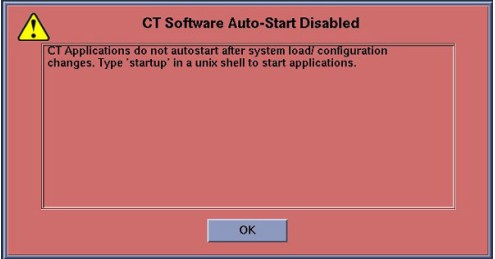

Operating Documentation
Direction 5193574-800, Rev# 22
Module Version 4.0, Version Date 1/19/15
Operating Documentation |
| Condition | Reference | Effectivity |
|---|---|---|
All hardware components of the System must be functional. | - | - |
The Operator Console Front Cover will need to be removed to gain access to the Host Computer DVD Drive. | - | - |
A valid and current System State Backup is required. System State is already records site specific configuration and preferences. If System State Backup media is missing or not current, some or all of the following must be performed: (1.) A manual configuration using information contained on the System Configuration Data Sheet completed at installation time. (2.) Software Options Licences will need to be manually reloaded. (3.) System Calibrations will need to be performed. | - | - |
Only trained service personnel should service the GE CT Scanner. | - | - |
CTT Operating System, Version 5.3.11
CT Applications Software
Confirm that a current System State Backup Media is on site. If unsure of the status of the System State, execute (12HW14.6) GOC6 and 6.5 System State Save Restore procedure found in the Software Chapter of this manual. Save a System State Backup to either DVD-RAM or USB Media.
Remove all media from MOD and DVD Peripheral Towers before starting the OS Load of the LFC process.
Check operational status of Configuration and Control Network connections (RMM and/or Management Modules).
Console power should be cycled prior to running this command. Note: DIG/VeRB RMMs network ports may turn off after extended periods on no-use.
Open a Terminal Window on system and log on as root.
Launch the “nmap” Tool:
If a computer doesn’t respond, one may try: 1. Power Cycle on Operator Console or 2. A “reconfig” to rule out any issues with DHCP Configuration (IP Leasing). If no response after “reconfig”, one will need to troubleshoot the network cables and switch and possibly replace the computer hardware in question. Note: Above test assumes that the Host is booted and the operating system is accessible. If software corruption is suspected, proceed with LFC. but understand that the network interfaces have not been proven functional.
Check operational status of Scan Data Array Hard Disks in the HSDA/s.
To access the HSDA from the Host Computer, open a Terminal Window, and log on as root:
Launch the Java “raidcmd2” Tool:
Then connect to the HSDA hostname you want to look at:
To check operation status of the hard disks in the array:
Check Exam Split Type.
Unplug the Hospital Network (HSP - J26) cable from rear Console bulkhead.
Label the cable as HSP - J26 (if necessary) and set it aside during LFC.
Remove the Operator Console front cover per the prescribed procedure Console Cover Removal and Installation.
Insert the OS Disk into the Host Computer DVD Drive. See the following illustrations.
Shutdown and Power Cycle Operator Console:
Using the toolchest, open a Terminal Window.
Type: {ctuser@hostname}halt and press [Enter].
Wait for System Halted message to appear on the monitors.
Turn Off Operator Console power. Wait 30 seconds, then turn power On.
As the Host Computer restarts, the boot process messages appear. After the booting process completes the boot: prompt appears.
At the “boot:” prompt, type the following:
After the OS is loaded on the Host Computer, the Complete Window appears.
Remove the OS Disk from the Host Computer DVD drive when it ejects and close the tray. Press [Enter] to Reboot.
The Host Computer begins to reboot.
Open the tray on the Host Computer DVD Drive.
Insert the Applications Disk into the DVD Drive and close the tray.
Select [Run Command] in the Warning box.
Select [Load] in the CT Software Installation window.
System State decision for Install INFO decision box will appear.
System State (Install INFO) Media Type decision window will appear
Insert the System State Backup Media (DVD-RAM or USB).
The Install INFO on the System State Backup Media will be read and if a valid System State Backup has been inserted, an LightSpeed/INFO window will become active.
The Install INFO on the System State Backup Media will be displayed and a confirmation window will appear.
System Install INFO will be now used to create the CT Application load routine. Do not remove the Apps Disk until completed.
When completed, the Operator Console will automatically reboot.
After the Host Computer reboots, a pop-up window will appear
Illustration 17: CT Software Auto-Start Disabled Pop-Up Windows

To launch LFC Menu, open a Terminal Window, and log on as root:
Type: {ctuser@hostname}su - [ENTER]
Type the root password and press [ENTER]
Type: [root@hostname] /usr/g/scripts/LFC/startLfcMenu.sh [ENTER]
A window will be displayed showing the LFC Menu.
Select Load DIG (Menu Selection # 1)
Select Load VeRB (Menu Selection # 2)
Select Set Date and Time (Menu Selection # 3)
Select Install ClassC (Menu Selection # 4)
Select Install ClassM (Menu Selection # 5)
Select Restore System State (Menu Selection # 6)
Optional Menu Selections
Select Quit (Menu Selection # 10)
Reconnect the Hospital Network cable at the rear of the Operator Console (J26) that was disconnected at the beginning of the LFC.
Reboot the System
Perform the Tube Install Certification procedure.
When completed, continue with Flash Download.
Note: Flash Download should be performed as part of any Load From Cold process. In the event a Service Pack load is required for this release, hold off from performing the flash Download until the Service Pack has been installed. See Finalization Section at the end of the procedure.
Perform the Flash Download Utility found on the Common Service Desktop - Utilities Tab, select [Flash Download].
When the Flash Download Window opens,
Once the Hardware Flash Downloads successfully, select [Dismiss].
Close the Common Service Desktop.
Select Shutdown icon on the Desktop and restart the system.
Shutdown the application.
Open a Unix shell, and type the following.
cd /usr/g/config [ENTER]
cp prep_flags.cfg.vct prep_flags.cfg.vct.org [ENTER]
chmod +w prep_flags.cfg.vct [ENTER]
nedit prep_flags.cfg.vct [ENTER]
Change the value of the following line to 1.
Click [File] , and click [SAVE], then select [Exit] to close the window.
Type the following to confirm whether the file is changed definitely.
Type chmod -w prep_flags.cfg.vct [ENTER]
Reboot the system.
Perform the (12HW14.6) GOC6 and 6.5 System State Save Restore procedure and save a System State Backup to either DVD-RAM or USB Media.
Save the System State Backup media in a safe and secure location for future service activity.
If applicable, install Service Pack updates, refer to the latest Service Pack installation procedure.
For Japanese language setting system only, perform the following procedure.
| NOTE: | If this procedure is not followed, wrong character will be indicated on Network History window in Image Works. |
Open a Terminal Window.
Type : cd /usr/g/ctuser/terra/resources/nwui
Type : mv nwui_ja_JP.properties nwui_ja_JP.properties.lfc
Type : cp -p nwui_en_US.properties nwui_ja_JP.properties
Open Image Works → Network → Network History and check if all buttons in the Network History window are correctly displayed.
Reinstall Console Front Cover.